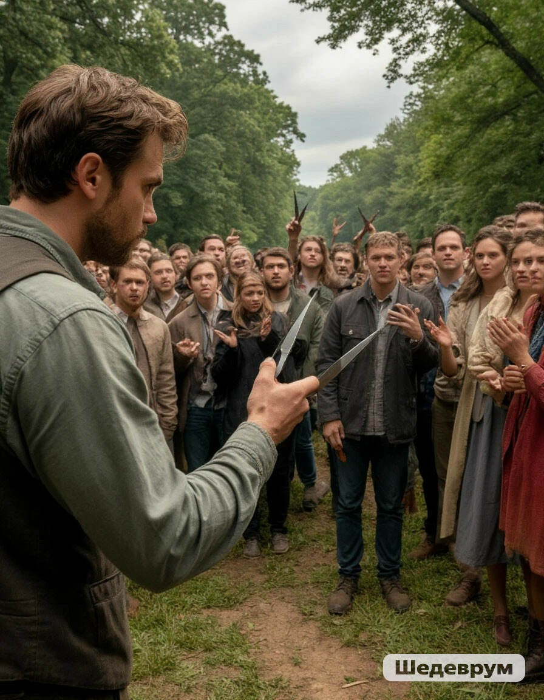

Женщина с полным пакетом слушает с интересом, но пожилой мужчина позади хмурится: «Слушай, парень, мы тут не первый год собираем. Бабки наши собирали, и ничего. А ты кто такой, чтобы нас учить?» Его жена одергивает: «Василий, дай человеку сказать». Но мужчина уже разозлился и не собирается слушать. Как вы поступите?
Показать им фотографии Красной книги на телефоне и объяснить, что за сбор этих растений положен крупный штраф

Предложить компромисс — пусть срезают только верхушки ножницами, не вырывая корни, чтобы растения могли восстановиться